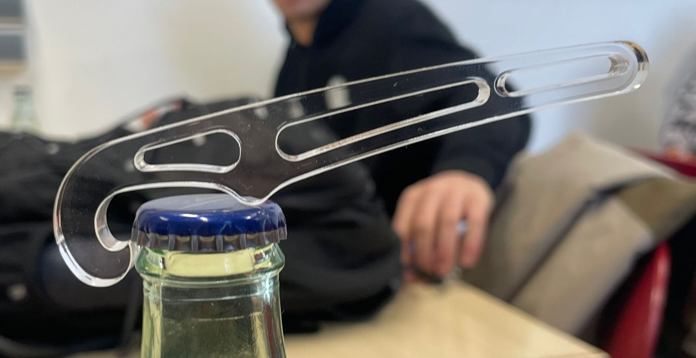
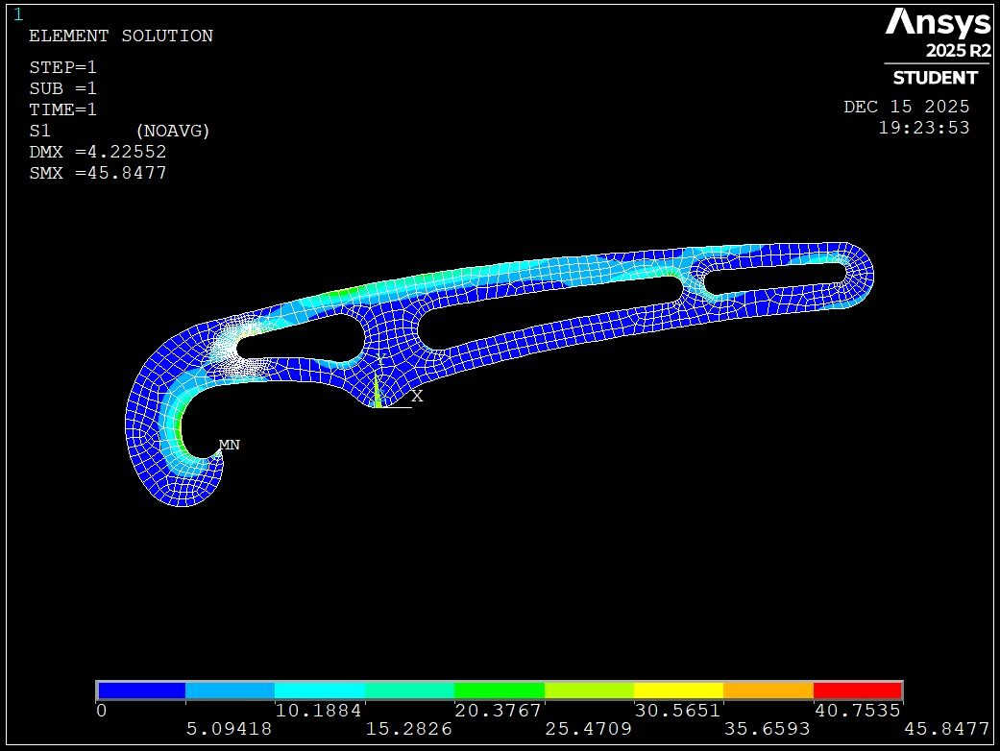
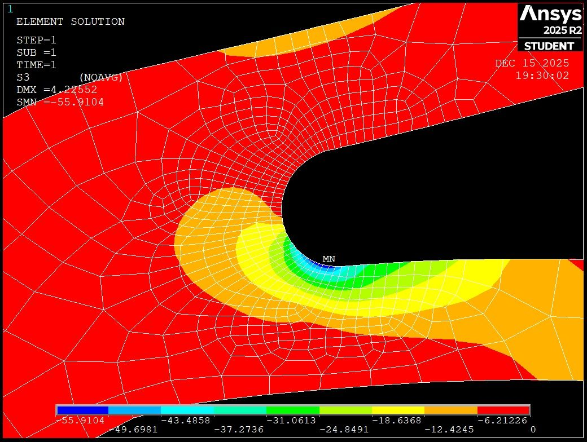
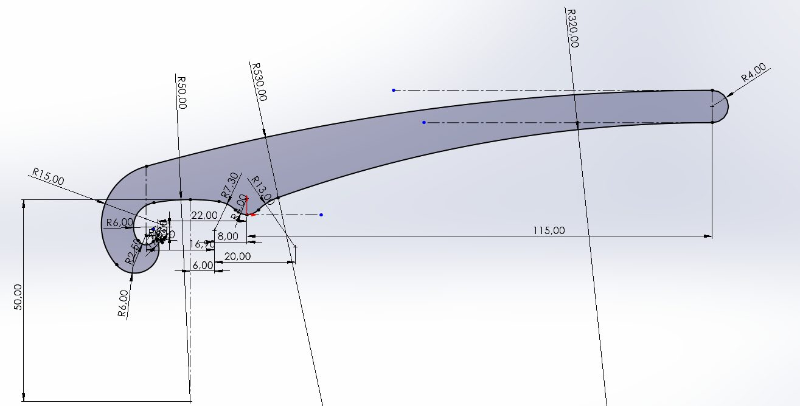
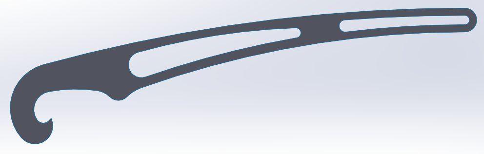
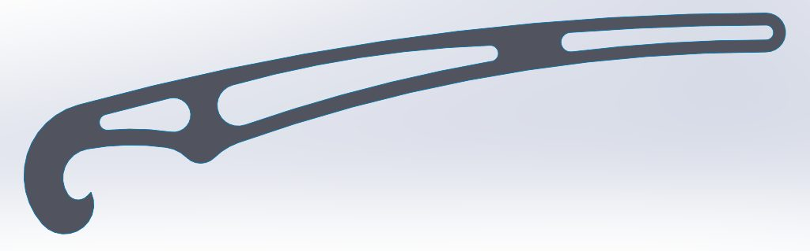
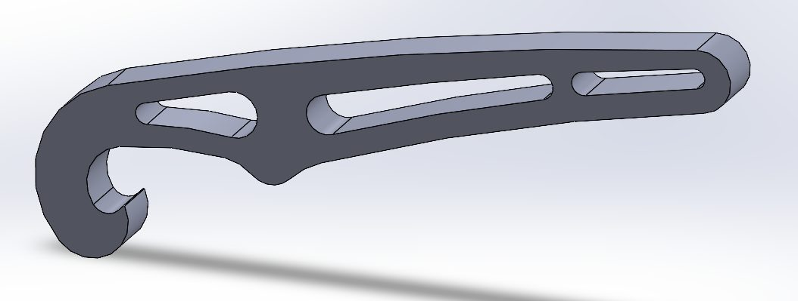
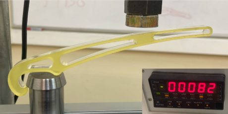
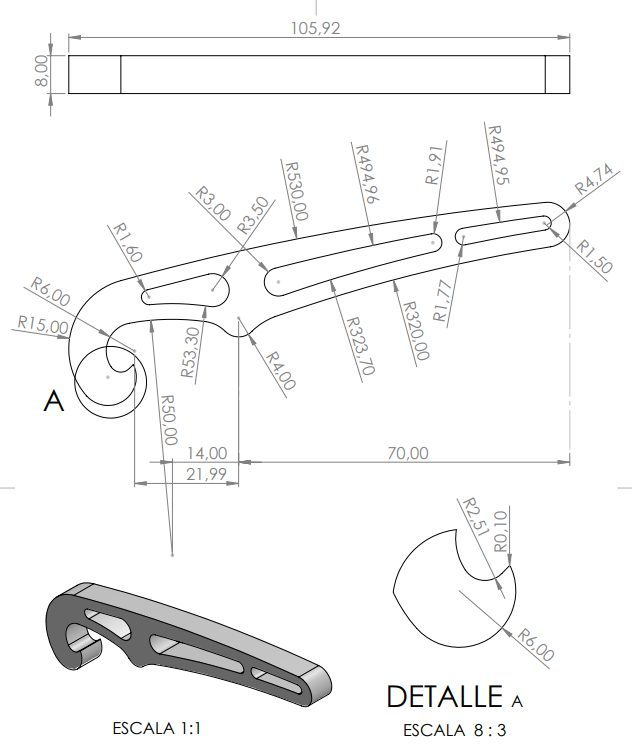
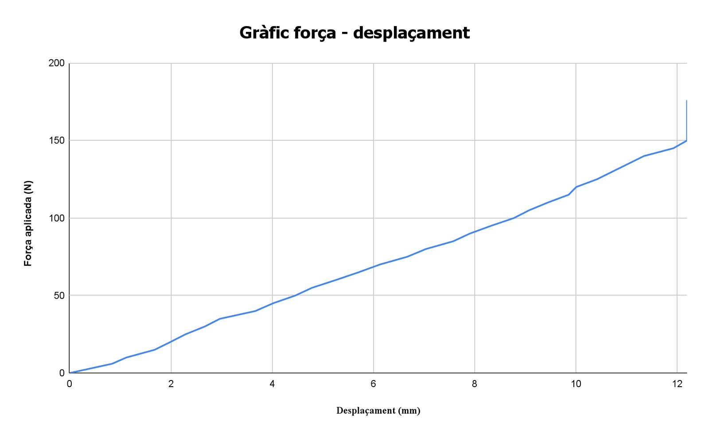

Bottle opener optimised with finite elements
Design, simulation, manufacture and testing of an acrylic bottle-cap opener. The goal was to maximise the ratio between failure load and weight, with a safety factor between 1.5 and 2. It went through four versions and two destructive tests.

- Period
- Autumn 2025
- My role
- Design, simulation and testing
- Status
- Completed
- Tools
- 21,5 → 10,0 g
- mass, first to final design
- 91 N
- failure load predicted by FEM
- 177 N
- measured failure load
- 33,8 €
- cost of 7 prototypes
Requirements
The opener had to open a bottle comfortably, break by hand in a controlled destructive test, have a lever arm under 150 mm and a safety factor between 1.5 and 2. We estimated the nominal force from population grip-strength data, using the 5th percentile so almost anyone could use it. The efficiency to maximise was ultimate load divided by weight.
Material
We first studied aluminium, but its yield point could not be reached by hand and it cost about five times more. We chose acrylic (PMMA, E = 3,000 MPa, 70 MPa yield strength), laser-cut at Servei Estació in Barcelona.
Finite element model
The model was built in ANSYS APDL with quadratic solid elements (SOLID183) and a linear elastic isotropic material, with mesh refinement at stress concentrations. For each version we checked principal tension and compression, computed the safety factor and, from it, the ultimate load.




Four design iterations
- Solid initial design: 21.5 g, with stresses well below the limit. There was material to spare.
- Version 1: two internal cut-outs following the outline, 15.5 g.
- Version 2: a third cut-out, 14.5 g. We tested it and it broke at 82 N in compression, exactly where the model showed peak stress. That gave us the real compressive limit of the material: 92.5 MPa.
- Final version: 63 mm lever arm and 8 mm thickness, 10.0 g. Safety factor 1.53, predicted ultimate load 91 N and theoretical efficiency of 922.












Final test and what I learned
In the destructive test the final version held 177 N, almost twice the prediction, behaving elastically and brittle up to failure. The linear model proved conservative for three reasons: it predicts failure from a single-node peak stress, it ignores local stress redistribution in PMMA, and the real contact point differed from the simulated one. The real safety factor was 3.3, outside the required range. The lesson is that a finite element model has to be checked against tests and its boundary conditions tuned carefully.

